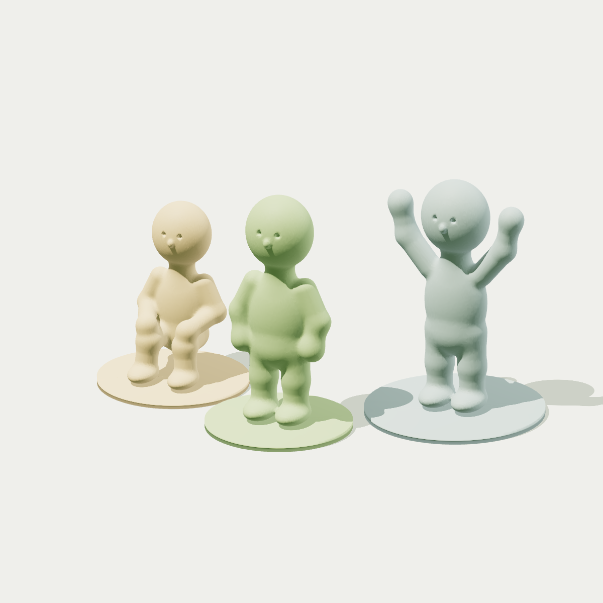

01
Find your starting point.
Use a photo with up to three people, or choose a ready-made manual pose. Standing, sitting, reaching—there’s a little personality in all of them.
PHOTO OR MANUAL POSEThat silly stance. Your favorite stretch. A little moment worth keeping. Turn a pose into an original 3D figure, ready for your next print.

A little making, without the blank canvas.
Start with a photo or pick a playful pose.
Use a photo with up to three people, or choose a ready-made manual pose. Standing, sitting, reaching—there’s a little personality in all of them.
PHOTO OR MANUAL POSEOrbit your figure in real 3D. Adjust its size, move the group around, add a pedestal, and find that just-right little arrangement.
PREVIEW & PERSONALIZECheck the mesh, download your STL, and take it to your slicer. Your screen-sized idea is one step closer to a shelf-sized companion.
CHECK & EXPORTYour height. Your little world.
More than a pretty preview. Every little figure is real solid geometry that you can measure, inspect, and export.
Set an exact overall height in millimeters, including the pedestal.
Create one figure or arrange up to three. Export separately or as a group.
Inspect mesh checks before export. Final supports, orientation, and print settings belong in your slicer.
Run the app on your own computer. Photos go to your local app server for temporary processing, with no third-party photo uploads or analytics. Save your project when you’re ready.
No. Start immediately with one of six manual presets and a real procedural demo. Manual models are labeled clearly; they are never presented as inferred from a photo.
No. Photo mode estimates visible body pose and creates an original stylized figure with simplified anatomy. Depth and hidden limbs are uncertain, and the app does not promise facial likeness.
Yes. Use the included Windows launcher after installing Python 3.12. It prepares the app and opens your browser. The first setup needs an internet connection to download dependencies and the pose model. No hosting subscription is required.
Download a binary STL and open it in your slicer as millimeters: STL does not store units. Inspect the model, add supports if needed, and choose settings for your printer and material. Mesh checks are helpful heuristics, not a print-success guarantee.
No. These are original procedural designs with a rounded, minimalist aesthetic. Little Figures Studio uses no official character mesh, sculpt, logo, or packaging and claims no brand affiliation.
Make it. Move it. Make it yours.